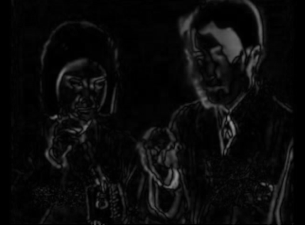

Same story as on the FreeFrame 1.0 side:
I'm a VJ who builds the effects I'm missing.
That set was for my old Resolume 2.41 rig — but most other VJs and venues I run into these
days are on a modern Resolume instead, so the same itch needed a second life as real 64-bit
FFGL plugins rather than just staying a 2.41-only thing.
64-bit FFGL plugins for modern Resolume (7.x), built on top of
Resolume's own FFGL SDK,
made with Claude — same collaborator, same
spirit, different (64-bit, GPU-texture-based) plugin API. Cross-compiled to Windows from
Linux using MinGW; see the repo's build-windows-mingw.sh scripts and README
for the officially-supported Visual Studio / Xcode workflow.
Install: copy a .dll (and, for ISF Browser / ISF Effect, any
.fs shader files you want it to find) into
%USERPROFILE%\Documents\Resolume\Extra Effects\, then (re)start Resolume.
Sources vs. effects: ISF Browser and videopong.net are sources —
find them in the sources panel and drop them into a clip slot. FrameDiff, ColorReduce and
ISF Effect are effects — drop them onto a clip, layer, or the master effect slot.
Source code:

Subtracts a delayed copy of the frame from the current one — motion lights up white, still areas go dark. The delay is a ring of up to 30 GPU framebuffers: pass 1 unpremultiplies the live input into this frame's ring slot, pass 2 diffs that slot against the delayed one with a Rec.601-luma + Hardness contrast curve.
Finds the N most dominant colours in the frame (a coarse 6x6x6 histogram) and remaps every pixel to its nearest one. The histogram step is inherently whole-frame, which doesn't fit a single stateless GPU pass — this reads the input texture back to the CPU once per frame and runs the histogram/top-N algorithm there, then a GPU shader does only the final per-pixel remap against the resulting palette. That CPU readback is a real (if usually small) performance cost compared to a pure-GPU effect.
Loads and hot-swaps ISF/GLSL generator shaders from disk — no build tools needed on the
Windows side. Drop ISFBrowser.dll and any number of .fs files
into the same Resolume plugins folder; a native option dropdown lists every shader
found. Every one of a shader's own ISF INPUTS becomes its own real, named,
ranged Resolume parameter automatically — no popup window, no background thread,
everything lives in Resolume's own parameter panel.
Generator shaders (compatible with ISF Browser) from this project:
Not included here: shaders using ISF's multi-pass PASSES/PASSINDEX/
IMG_PIXEL features (e.g. a raymarched "sandwich supernova" scene this
project also has lying around) — neither ISF Browser nor ISF Effect implement
multi-pass yet, only a single fragment-shader pass per shader.
Effect sibling of ISF Browser: same scan-a-folder-of-.fs,
dynamic-native-parameters design, but applies to a clip/layer instead of generating
standalone. A shader's own ISF "TYPE": "image" input (by convention named
inputImage) is bound to the plugin's actual incoming video each frame;
every other float/bool/long INPUTS entry still becomes its own named,
ranged Resolume parameter automatically. Shaders with no image input still load fine —
they just ignore the incoming video (a generator used in an effect slot).
Filter shaders (declare an image input, made for ISF Effect) from this project:
Any of the generator shaders listed under ISF Browser above will also load into ISF Effect (they just won't react to the incoming clip).
Finds and plays clips from videopong.net
directly inside Resolume. "Browse Clips" opens a popup window to search and pick a clip,
which then downloads and plays. Statically linked against FFmpeg for decoding, so
nothing else needs to ship alongside the plugin. The only one of these plugins whose
Linux cross-compile needs the posix-threads mingw-w64 variant
specifically (its background download/decode threads need working
std::thread/std::mutex) — see the plugin's own
build-windows-mingw.sh for the full toolchain requirement.